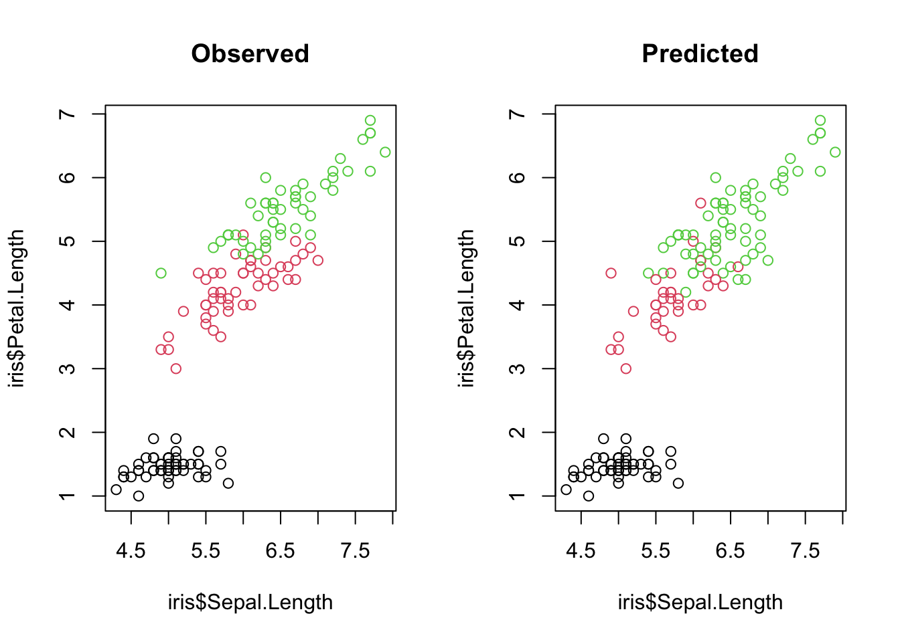
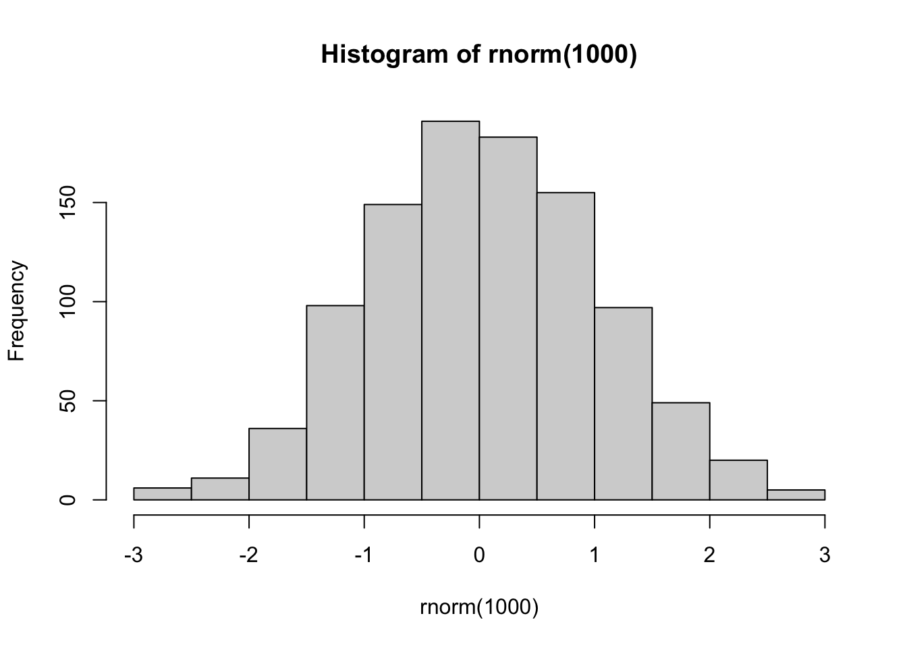
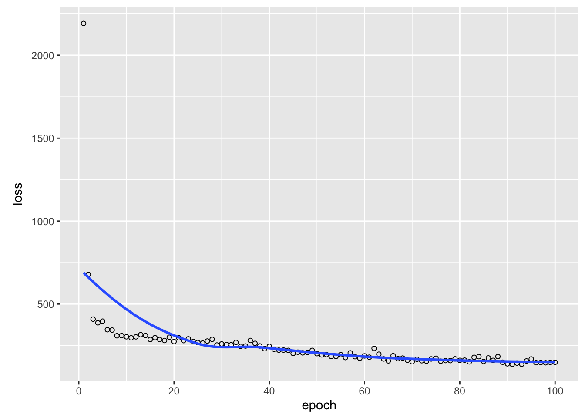
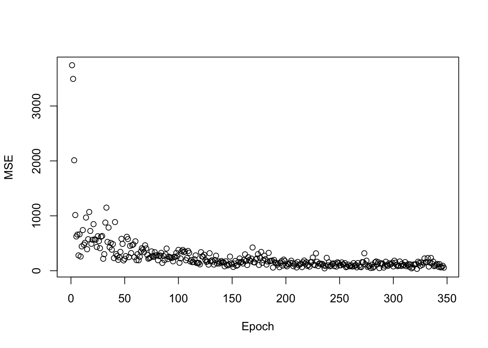

library(keras)
# or library(torch)9 Deep Neural Networks
9.1 Keras/Torch Framework
We have seen that we can use TensorFlow directly out of R, and we could use this knowledge to implement a neural network in TensorFlow directly in R. However, this can be quite cumbersome. For simple problems, it is usually faster to use a higher-level API that helps us with implementing the machine learning models in TensorFlow. The most common of those is Keras.
Keras is a powerful framework for building and training neural networks with a few lines of codes. Since the end of 2018, Keras and TensorFlow are completely interoperable, allowing us to utilize the best of both.
The objective of this lesson is to familiarize yourself with Keras. If you have installed TensorFlow, Keras can be found within TensorFlow: tf.keras. However, the RStudio team has built an R package on top of tf.keras, and it is more convenient to use this. To load the Keras package, type
9.1.1 Example workflow in Keras / Torch
To show how Keras works, we will now build a small classifier to predict the three species of the iris data set. Load the necessary packages and data sets:
library(keras)
library(tensorflow)
library(torch)
set_random_seed(321L, disable_gpu = FALSE) # Already sets R's random seed.
data(iris)
head(iris) Sepal.Length Sepal.Width Petal.Length Petal.Width Species
1 5.1 3.5 1.4 0.2 setosa
2 4.9 3.0 1.4 0.2 setosa
3 4.7 3.2 1.3 0.2 setosa
4 4.6 3.1 1.5 0.2 setosa
5 5.0 3.6 1.4 0.2 setosa
6 5.4 3.9 1.7 0.4 setosaFor neural networks, it is beneficial to scale the predictors (scaling = centering and standardization, see ?scale). We also split our data into predictors (X) and response (Y = the three species).
X = scale(iris[,1:4])
Y = iris[,5]Additionally, Keras/TensorFlow cannot handle factors and we have to create contrasts (one-hot encoding). To do so, we have to specify the number of categories. This can be tricky for a beginner, because in other programming languages like Python and C++, arrays start at zero. Thus, when we would specify 3 as number of classes for our three species, we would have the classes 0,1,2,3. Keep this in mind.
Y = to_categorical(as.integer(Y) - 1L, 3)
head(Y) # 3 columns, one for each level of the response. [,1] [,2] [,3]
[1,] 1 0 0
[2,] 1 0 0
[3,] 1 0 0
[4,] 1 0 0
[5,] 1 0 0
[6,] 1 0 0After having prepared the data, we will now see a typical workflow to specify a model in Keras/Torch.
1. Initialize a sequential model in Keras:
model = keras_model_sequential()Torch users can skip this step.
A sequential Keras model is a higher order type of model within Keras and consists of one input and one output model.
2. Add hidden layers to the model (we will learn more about hidden layers during the next days).
When specifying the hidden layers, we also have to specify the shape and a so called activation function. You can think of the activation function as decision for what is forwarded to the next neuron (but we will learn more about it later). If you want to know this topic in even more depth, consider watching the videos presented in section @ref(basicMath).
The shape of the input is the number of predictors (here 4) and the shape of the output is the number of classes (here 3).
model %>%
layer_dense(units = 20L, activation = "relu", input_shape = list(4L)) %>%
layer_dense(units = 20L) %>%
layer_dense(units = 20L) %>%
layer_dense(units = 3L, activation = "softmax") The Torch syntax is very similar, we will give a list of layers to the “nn_sequential” function. Here, we have to specify the softmax activation function as an extra layer:
model_torch =
nn_sequential(
nn_linear(4L, 20L),
nn_linear(20L, 20L),
nn_linear(20L, 20L),
nn_linear(20L, 3L),
nn_softmax(2)
)- softmax scales a potential multidimensional vector to the interval \((0, 1]\) for each component. The sum of all components equals 1. This might be very useful for example for handling probabilities. Ensure ther the labels start at 0! Otherwise the softmax function does not work well!
3. Compile the model with a loss function (here: cross entropy) and an optimizer (here: Adamax).
We will learn about other options later, so for now, do not worry about the “learning_rate” (“lr” in Torch or earlier in TensorFlow) argument, cross entropy or the optimizer.
model %>%
compile(loss = loss_categorical_crossentropy,
keras::optimizer_adamax(learning_rate = 0.001))
summary(model)Model: "sequential"
________________________________________________________________________________
Layer (type) Output Shape Param #
================================================================================
dense_3 (Dense) (None, 20) 100
dense_2 (Dense) (None, 20) 420
dense_1 (Dense) (None, 20) 420
dense (Dense) (None, 3) 63
================================================================================
Total params: 1,003
Trainable params: 1,003
Non-trainable params: 0
________________________________________________________________________________Specify optimizer and the parameters which will be trained (in our case the parameters of the network):
optimizer_torch = optim_adam(params = model_torch$parameters, lr = 0.001)4. Fit model in 30 iterations (epochs)
library(tensorflow)
library(keras)
set_random_seed(321L, disable_gpu = FALSE) # Already sets R's random seed.
model_history =
model %>%
fit(x = X, y = apply(Y, 2, as.integer), epochs = 30L,
batch_size = 20L, shuffle = TRUE)In Torch, we jump directly to the training loop, however, here we have to write our own training loop:
- Get a batch of data.
- Predict on batch.
- Ccalculate loss between predictions and true labels.
- Backpropagate error.
- Update weights.
- Go to step 1 and repeat.
library(torch)
torch_manual_seed(321L)
set.seed(123)
# Calculate number of training steps.
epochs = 30
batch_size = 20
steps = round(nrow(X)/batch_size * epochs)
X_torch = torch_tensor(X)
Y_torch = torch_tensor(apply(Y, 1, which.max))
# Set model into training status.
model_torch$train()
log_losses = NULL
# Training loop.
for(i in 1:steps){
# Get batch.
indices = sample.int(nrow(X), batch_size)
# Reset backpropagation.
optimizer_torch$zero_grad()
# Predict and calculate loss.
pred = model_torch(X_torch[indices, ])
loss = nnf_cross_entropy(pred, Y_torch[indices])
# Backpropagation and weight update.
loss$backward()
optimizer_torch$step()
log_losses[i] = as.numeric(loss)
}5. Plot training history:
plot(model_history)
plot(log_losses, xlab = "steps", ylab = "loss", las = 1)6. Create predictions:
predictions = predict(model, X) # Probabilities for each class.Get probabilities:
head(predictions) # Quasi-probabilities for each species. [,1] [,2] [,3]
[1,] 0.9915600 0.006817889 0.0016221496
[2,] 0.9584184 0.037489697 0.0040918575
[3,] 0.9910416 0.007848956 0.0011094128
[4,] 0.9813542 0.016901711 0.0017440914
[5,] 0.9949830 0.004031503 0.0009855649
[6,] 0.9905725 0.006884387 0.0025430375For each plant, we want to know for which species we got the highest probability:
preds = apply(predictions, 1, which.max)
print(preds) [1] 1 1 1 1 1 1 1 1 1 1 1 1 1 1 1 1 1 1 1 1 1 1 1 1 1 1 1 1 1 1 1 1 1 1 1 1 1
[38] 1 1 1 1 2 1 1 1 1 1 1 1 1 3 3 3 2 2 2 3 2 2 2 2 2 2 2 2 3 2 2 2 2 3 2 2 2
[75] 2 2 2 3 2 2 2 2 2 2 2 3 3 2 2 2 2 2 2 2 2 2 2 2 2 2 3 3 3 3 3 3 2 3 3 3 3
[112] 3 3 3 3 3 3 3 3 2 3 3 3 3 3 3 3 3 3 3 3 3 3 2 2 3 3 3 3 3 3 3 3 3 3 3 3 3
[149] 3 3model_torch$eval()
preds_torch = model_torch(torch_tensor(X))
preds_torch = apply(preds_torch, 1, which.max)
print(preds_torch) [1] 1 1 1 1 1 1 1 1 1 1 1 1 1 1 1 1 1 1 1 1 1 1 1 1 1 1 1 1 1 1 1 1 1 1 1 1 1
[38] 1 1 1 1 1 1 1 1 1 1 1 1 1 2 2 2 2 2 2 2 2 2 2 2 2 2 2 2 2 2 2 2 2 3 2 2 2
[75] 2 2 2 2 2 2 2 2 2 3 2 2 2 2 2 2 2 2 2 2 2 2 2 2 2 2 3 3 3 3 3 3 3 3 3 3 3
[112] 3 3 3 3 3 3 3 3 2 3 3 3 3 3 3 3 3 3 3 3 3 3 2 3 3 3 3 3 3 3 3 3 3 3 3 3 3
[149] 3 37. Calculate Accuracy (how often we have been correct):
mean(preds == as.integer(iris$Species))[1] 0.9066667mean(preds_torch == as.integer(iris$Species))[1] 0.97333338. Plot predictions, to see if we have done a good job:
oldpar = par(mfrow = c(1, 2))
plot(iris$Sepal.Length, iris$Petal.Length, col = iris$Species,
main = "Observed")
plot(iris$Sepal.Length, iris$Petal.Length, col = preds,
main = "Predicted")
par(oldpar) # Reset par.So you see, building a neural network is very easy with Keras or Torch and you can already do it on your own.
9.2 Exercises
Task: Regression with keras
We now build a regression for the airquality data set with Keras/Torch. We want to predict the variable “Ozone” (continuous).
Tasks:
- Complete the steps and the code chunk so that the model is successfully trained!
- Try different learning rates and neural network sizes (increase/decrease number of hidden layers and neurons (units) in each layer). What happens?
- Load and prepare the data set:
library(tensorflow)
library(keras)
set_random_seed(321L, disable_gpu = FALSE) # Already sets R's random seed.
data = airqualityExplore the data with summary() and plot():
summary(data) Ozone Solar.R Wind Temp
Min. : 1.00 Min. : 7.0 Min. : 1.700 Min. :56.00
1st Qu.: 18.00 1st Qu.:115.8 1st Qu.: 7.400 1st Qu.:72.00
Median : 31.50 Median :205.0 Median : 9.700 Median :79.00
Mean : 42.13 Mean :185.9 Mean : 9.958 Mean :77.88
3rd Qu.: 63.25 3rd Qu.:258.8 3rd Qu.:11.500 3rd Qu.:85.00
Max. :168.00 Max. :334.0 Max. :20.700 Max. :97.00
NA's :37 NA's :7
Month Day
Min. :5.000 Min. : 1.0
1st Qu.:6.000 1st Qu.: 8.0
Median :7.000 Median :16.0
Mean :6.993 Mean :15.8
3rd Qu.:8.000 3rd Qu.:23.0
Max. :9.000 Max. :31.0
plot(data)
There are NAs in the data, which we have to remove because Keras cannot handle NAs. If you don’t know how to remove NAs from a data.frame, use Google (e.g. with the query: “remove-rows-with-all-or-some-nas-missing-values-in-data-frame”).
Split the data in predictors (\(\boldsymbol{X}\)) and response (\(\boldsymbol{y}\), Ozone) and scale the \(\boldsymbol{X}\) matrix.
Build a sequential Keras model.
Add hidden layers (input and output layer are already specified, you have to add hidden layers between them):
model %>%
layer_dense(units = 20L, activation = "relu", input_shape = list(5L)) %>%
....
layer_dense(units = 1L, activation = "linear")- Why do we use 5L as input shape?
- Why only one output node and “linear” activation layer?
- Compile model.
model %>%
compile(loss = loss_mean_squared_error, optimizer_adamax(learning_rate = 0.05))What is the “mean_squared_error” loss?
- Fit model:
Tip: Only matrices are accepted for \(\boldsymbol{X}\) and \(\boldsymbol{y}\) by Keras. R often drops a one column matrix into a vector (change it back to a matrix!)
Plot training history.
Create predictions.
Compare your Keras model with a linear model:
fit = lm(Ozone ~ ., data = data)
pred_lm = predict(fit, data)
rmse_lm = mean(sqrt((y - pred_lm)^2))
rmse_keras = mean(sqrt((y - pred_keras)^2))
print(rmse_lm)
print(rmse_keras)- Load and prepare the data set:
library(torch)
data = airqualityExplore the data with summary() and plot():
summary(data) Ozone Solar.R Wind Temp
Min. : 1.00 Min. : 7.0 Min. : 1.700 Min. :56.00
1st Qu.: 18.00 1st Qu.:115.8 1st Qu.: 7.400 1st Qu.:72.00
Median : 31.50 Median :205.0 Median : 9.700 Median :79.00
Mean : 42.13 Mean :185.9 Mean : 9.958 Mean :77.88
3rd Qu.: 63.25 3rd Qu.:258.8 3rd Qu.:11.500 3rd Qu.:85.00
Max. :168.00 Max. :334.0 Max. :20.700 Max. :97.00
NA's :37 NA's :7
Month Day
Min. :5.000 Min. : 1.0
1st Qu.:6.000 1st Qu.: 8.0
Median :7.000 Median :16.0
Mean :6.993 Mean :15.8
3rd Qu.:8.000 3rd Qu.:23.0
Max. :9.000 Max. :31.0
plot(data)
There are NAs in the data, which we have to remove because Keras cannot handle NAs. If you don’t know how to remove NAs from a data.frame, use Google (e.g. with the query: “remove-rows-with-all-or-some-nas-missing-values-in-data-frame”).
Split the data in predictors (\(\boldsymbol{X}\)) and response (\(\boldsymbol{y}\), Ozone) and scale the \(\boldsymbol{X}\) matrix.
Pass a list of layer objects to a sequential network class of torch (input and output layer are already specified, you have to add hidden layers between them):
model_torch =
nn_sequential(
nn_linear(5L, 20L),
...
nn_linear(20L, 1L),
)- Why do we use 5L as input shape?
- Why only one output node and no activation layer?
- Create optimizer
We have to pass the network’s parameters to the optimizer (how is this different to keras?)
optimizer_torch = optim_adam(params = model_torch$parameters, lr = 0.05)- Fit model
In torch we have to write the trainings loop on our own. Complete the trainings loop:
Tips:
- Number of training $ steps = Number of rows / batchsize * Epochs $
- Search torch::nnf_… for the correct loss function (mse…)
- Make sure that X_torch and Y_torch have the same data type! (you can set the dtype via torch_tensor(…, dtype = …)) _ Check the dimension of Y_torch, we need a matrix!
# Calculate number of training steps.
epochs = ...
batch_size = 32
steps = ...
X_torch = torch_tensor(x)
Y_torch = torch_tensor(y, ...)
# Set model into training status.
model_torch$train()
log_losses = NULL
# Training loop.
for(i in 1:steps){
# Get batch indices.
indices = sample.int(nrow(x), batch_size)
X_batch = ...
Y_batch = ...
# Reset backpropagation.
optimizer_torch$zero_grad()
# Predict and calculate loss.
pred = model_torch(X_batch)
loss = ...
# Backpropagation and weight update.
loss$backward()
optimizer_torch$step()
log_losses[i] = as.numeric(loss)
}Plot training history.
Create predictions.
Compare your Torch model with a linear model:
fit = lm(Ozone ~ ., data = data)
pred_lm = predict(fit, data)
rmse_lm = mean(sqrt((y - pred_lm)^2))
rmse_torch = mean(sqrt((y - pred_torch)^2))
print(rmse_lm)
print(rmse_torch)
Solution
data = airquality1. There are NAs in the data, which we have to remove because Keras and Torch cannot handle NAs!
data = data[complete.cases(data),] # Remove NAs.
summary(data) Ozone Solar.R Wind Temp
Min. : 1.0 Min. : 7.0 Min. : 2.30 Min. :57.00
1st Qu.: 18.0 1st Qu.:113.5 1st Qu.: 7.40 1st Qu.:71.00
Median : 31.0 Median :207.0 Median : 9.70 Median :79.00
Mean : 42.1 Mean :184.8 Mean : 9.94 Mean :77.79
3rd Qu.: 62.0 3rd Qu.:255.5 3rd Qu.:11.50 3rd Qu.:84.50
Max. :168.0 Max. :334.0 Max. :20.70 Max. :97.00
Month Day
Min. :5.000 Min. : 1.00
1st Qu.:6.000 1st Qu.: 9.00
Median :7.000 Median :16.00
Mean :7.216 Mean :15.95
3rd Qu.:9.000 3rd Qu.:22.50
Max. :9.000 Max. :31.00 2. Split the data in predictors and response and scale the matrix.
x = scale(data[,2:6])
y = data[,1]Keras
3. Build sequential Keras model.
library(tensorflow)
library(keras)
set_random_seed(321L, disable_gpu = FALSE) # Already sets R's random seed.
model = keras_model_sequential()4. Add hidden layers (input and output layer are already specified, you have to add hidden layers between them).
model %>%
layer_dense(units = 20L, activation = "relu", input_shape = list(5L)) %>%
layer_dense(units = 20L) %>%
layer_dense(units = 20L) %>%
layer_dense(units = 1L, activation = "linear")We use 5L as input shape, because we have 5 predictors. Analogously, we use 1L for our 1d response. Because we do not want any compression, dilation or other nonlinear effects, we use the simple linear layer (equal to no activation function at all). For more about activation functions, look for example here. Or wait for the next days. You may also have seen the previously shown link about activation functions in more detail.
5. Compile model.
model %>%
compile(loss = loss_mean_squared_error, optimizer_adamax(learning_rate = 0.05))The mean_squared_error is the ordinary least squares approach in regression analysis.
6. Fit model.
model_history =
model %>%
fit(x = x, y = matrix(y, ncol = 1L), epochs = 100L,
batch_size = 20L, shuffle = TRUE)7. Plot training history.
plot(model_history)
model %>%
evaluate(x, y) loss
147.5745 8. Create predictions.
pred_keras = predict(model, x)9. Compare Keras model with a linear model.
fit = lm(Ozone ~ ., data = data)
pred_lm = predict(fit, data)
rmse_lm = mean(sqrt((y - pred_lm)^2))
rmse_keras = mean(sqrt((y - pred_keras)^2))
print(rmse_lm)[1] 14.78897print(rmse_keras)[1] 9.067499Torch
3. Pass a list of layer objects to a sequential network class of torch (input and output layer are already specified, you have to add hidden layers between them):
library(torch)
model_torch =
nn_sequential(
nn_linear(5L, 20L),
nn_relu(),
nn_linear(20L, 20L),
nn_relu(),
nn_linear(20L, 20L),
nn_relu(),
nn_linear(20L, 1L),
)We use 5L as input shape, because we have 5 predictors. Analogously, we use 1L for our 1d response. Because we do not want any compression, dilation or other nonlinear effects, we use the simple linear layer (equal to no activation function at all). For more about activation functions, look for example here. Or wait for the next days. You may also have seen the previously shown link about activation functions in more detail.
4. Create optimizer
We have to pass the network’s parameters to the optimizer (how is this different to keras?)
optimizer_torch = optim_adam(params = model_torch$parameters, lr = 0.001)In keras we use the compile function to pass a optimizer and a loss function to the model whereas in torch we have to pass the network’s parameters to the optimizer.
5. Fit model
In torch we have to write the trainings loop on our own. Complete the trainings loop:
# Calculate number of training steps.
epochs = 100
batch_size = 32
steps = round(nrow(x)/batch_size*epochs)
X_torch = torch_tensor(x)
Y_torch = torch_tensor(y, dtype = torch_float32())$view(list(-1, 1))
# Set model into training status.
model_torch$train()
log_losses = NULL
# Training loop.
for(i in 1:steps){
# Get batch indices.
indices = sample.int(nrow(x), batch_size)
X_batch = X_torch[indices,]
Y_batch = Y_torch[indices,]
# Reset backpropagation.
optimizer_torch$zero_grad()
# Predict and calculate loss.
pred = model_torch(X_batch)
loss = nnf_mse_loss(pred, Y_batch)
# Backpropagation and weight update.
loss$backward()
optimizer_torch$step()
log_losses[i] = as.numeric(loss)
}6. Plot training history.
plot(y = log_losses, x = 1:steps, xlab = "Epoch", ylab = "MSE")7. Create predictions.
pred_torch = model_torch(X_torch)
pred_torch = as.numeric(pred_torch) # cast torch to R object 8. Compare your Torch model with a linear model:
fit = lm(Ozone ~ ., data = data)
pred_lm = predict(fit, data)
rmse_lm = mean(sqrt((y - pred_lm)^2))
rmse_torch = mean(sqrt((y - pred_torch)^2))
print(rmse_lm)
print(rmse_torch)Look at this slightly more complex model and compare the loss plot and the accuracy in contrast to the former.
Keras
library(tensorflow)
library(keras)
set_random_seed(321L, disable_gpu = FALSE) # Already sets R's random seed.
model = keras_model_sequential()
model %>%
layer_dense(units = 20L, activation = "relu", input_shape = list(5L)) %>%
layer_dense(units = 20L, activation = "relu") %>%
layer_dense(units = 30L, activation = "relu") %>%
layer_dense(units = 20L, activation = "relu") %>%
layer_dense(units = 1L, activation = "linear")
model %>%
compile(loss = loss_mean_squared_error, optimizer_adamax(learning_rate = 0.05))
model_history =
model %>%
fit(x = x, y = matrix(y, ncol = 1L), epochs = 100L,
batch_size = 20L, shuffle = TRUE)
plot(model_history)
model %>%
evaluate(x, y) loss
210.4453 pred_keras = predict(model, x)
fit = lm(Ozone ~ ., data = data)
pred_lm = predict(fit, data)
rmse_lm = mean(sqrt((y - pred_lm)^2))
rmse_keras = mean(sqrt((y - pred_keras)^2))
print(rmse_lm)[1] 14.78897print(rmse_keras)[1] 10.51122Torch
library(torch)
model_torch =
nn_sequential(
nn_linear(5L, 20L),
nn_relu(),
nn_linear(20L, 20L),
nn_relu(),
nn_linear(20L, 30L),
nn_relu(),
nn_linear(30L, 20L),
nn_relu(),
nn_linear(20L, 1L),
)
optimizer_torch = optim_adam(params = model_torch$parameters, lr = 0.05)
epochs = 100
batch_size = 32
steps = round(nrow(x)/batch_size*epochs)
X_torch = torch_tensor(x)
Y_torch = torch_tensor(y, dtype = torch_float32())$view(list(-1, 1))
model_torch$train()
log_losses = NULL
for(i in 1:steps){
indices = sample.int(nrow(x), batch_size)
X_batch = X_torch[indices,]
Y_batch = Y_torch[indices,]
# Reset backpropagation.
optimizer_torch$zero_grad()
# Predict and calculate loss.
pred = model_torch(X_batch)
loss = nnf_mse_loss(pred, Y_batch)
# Backpropagation and weight update.
loss$backward()
optimizer_torch$step()
log_losses[i] = as.numeric(loss)
}
plot(y = log_losses, x = 1:steps, xlab = "Epoch", ylab = "MSE")
pred_torch = model_torch(X_torch)
pred_torch = as.numeric(pred_torch) # cast torch to R object
fit = lm(Ozone ~ ., data = data)
pred_lm = predict(fit, data)
rmse_lm = mean(sqrt((y - pred_lm)^2))
rmse_torch = mean(sqrt((y - pred_torch)^2))
print(rmse_lm)[1] 14.78897print(rmse_torch)[1] 5.12053You see, the more complex model works better, because it can learn the functional form between the features and the response better (if necessary). But keep the overfitting problem in mind!
Look at the little change in learning rates for the next 2 models and compare the loss plot and the accuracy in contrast to the former.
Keras
library(tensorflow)
library(keras)
set_random_seed(321L, disable_gpu = FALSE) # Already sets R's random seed.
model = keras_model_sequential()
model %>%
layer_dense(units = 20L, activation = "relu", input_shape = list(5L)) %>%
layer_dense(units = 20L, activation = "relu") %>%
layer_dense(units = 30L, activation = "relu") %>%
layer_dense(units = 20L, activation = "relu") %>%
layer_dense(units = 1L, activation = "linear")
model %>%
compile(loss = loss_mean_squared_error, optimizer_adamax(learning_rate = 0.1))
model_history =
model %>%
fit(x = x, y = matrix(y, ncol = 1L), epochs = 100L,
batch_size = 20L, shuffle = TRUE)
plot(model_history)
model %>%
evaluate(x, y) loss
56.70872 pred_keras = predict(model, x)
fit = lm(Ozone ~ ., data = data)
pred_lm = predict(fit, data)
rmse_lm = mean(sqrt((y - pred_lm)^2))
rmse_keras = mean(sqrt((y - pred_keras)^2))
print(rmse_lm)[1] 14.78897print(rmse_keras)[1] 5.661808Torch
library(torch)
model_torch =
nn_sequential(
nn_linear(5L, 20L),
nn_relu(),
nn_linear(20L, 20L),
nn_relu(),
nn_linear(20L, 30L),
nn_relu(),
nn_linear(30L, 20L),
nn_relu(),
nn_linear(20L, 1L),
)
optimizer_torch = optim_adam(params = model_torch$parameters, lr = 0.1)
epochs = 100
batch_size = 32
steps = round(nrow(x)/batch_size*epochs)
X_torch = torch_tensor(x)
Y_torch = torch_tensor(y, dtype = torch_float32())$view(list(-1, 1))
model_torch$train()
log_losses = NULL
for(i in 1:steps){
indices = sample.int(nrow(x), batch_size)
X_batch = X_torch[indices,]
Y_batch = Y_torch[indices,]
# Reset backpropagation.
optimizer_torch$zero_grad()
# Predict and calculate loss.
pred = model_torch(X_batch)
loss = nnf_mse_loss(pred, Y_batch)
# Backpropagation and weight update.
loss$backward()
optimizer_torch$step()
log_losses[i] = as.numeric(loss)
}
plot(y = log_losses, x = 1:steps, xlab = "Epoch", ylab = "MSE")
pred_torch = model_torch(X_torch)
pred_torch = as.numeric(pred_torch) # cast torch to R object
fit = lm(Ozone ~ ., data = data)
pred_lm = predict(fit, data)
rmse_lm = mean(sqrt((y - pred_lm)^2))
rmse_torch = mean(sqrt((y - pred_torch)^2))
print(rmse_lm)[1] 14.78897print(rmse_torch)[1] 6.461597You can see, the higher learning rate yields a little bit worse results. The optimum is jumped over.
Keras
library(tensorflow)
library(keras)
set_random_seed(321L, disable_gpu = FALSE) # Already sets R's random seed.
model = keras_model_sequential()
model %>%
layer_dense(units = 20L, activation = "relu", input_shape = list(5L)) %>%
layer_dense(units = 20L, activation = "relu") %>%
layer_dense(units = 30L, activation = "relu") %>%
layer_dense(units = 20L, activation = "relu") %>%
layer_dense(units = 1L, activation = "linear")
model %>%
compile(loss = loss_mean_squared_error, optimizer_adamax(learning_rate = 0.001))
model_history =
model %>%
fit(x = x, y = matrix(y, ncol = 1L), epochs = 100L,
batch_size = 20L, shuffle = TRUE)
plot(model_history)
model %>%
evaluate(x, y) loss
340.8205 pred_keras = predict(model, x)
fit = lm(Ozone ~ ., data = data)
pred_lm = predict(fit, data)
rmse_lm = mean(sqrt((y - pred_lm)^2))
rmse_keras = mean(sqrt((y - pred_keras)^2))
print(rmse_lm)[1] 14.78897print(rmse_keras)[1] 13.18632Torch
library(torch)
model_torch =
nn_sequential(
nn_linear(5L, 20L),
nn_relu(),
nn_linear(20L, 20L),
nn_relu(),
nn_linear(20L, 30L),
nn_relu(),
nn_linear(30L, 20L),
nn_relu(),
nn_linear(20L, 1L),
)
optimizer_torch = optim_adam(params = model_torch$parameters, lr = 0.001)
epochs = 100
batch_size = 32
steps = round(nrow(x)/batch_size*epochs)
X_torch = torch_tensor(x)
Y_torch = torch_tensor(y, dtype = torch_float32())$view(list(-1, 1))
model_torch$train()
log_losses = NULL
for(i in 1:steps){
indices = sample.int(nrow(x), batch_size)
X_batch = X_torch[indices,]
Y_batch = Y_torch[indices,]
# Reset backpropagation.
optimizer_torch$zero_grad()
# Predict and calculate loss.
pred = model_torch(X_batch)
loss = nnf_mse_loss(pred, Y_batch)
# Backpropagation and weight update.
loss$backward()
optimizer_torch$step()
log_losses[i] = as.numeric(loss)
}
plot(y = log_losses, x = 1:steps, xlab = "Epoch", ylab = "MSE")
pred_torch = model_torch(X_torch)
pred_torch = as.numeric(pred_torch) # cast torch to R object
fit = lm(Ozone ~ ., data = data)
pred_lm = predict(fit, data)
rmse_lm = mean(sqrt((y - pred_lm)^2))
rmse_torch = mean(sqrt((y - pred_torch)^2))
print(rmse_lm)[1] 14.78897print(rmse_torch)[1] 12.48754You can see, that for the lower learning rate, the optimum (compared to the run with learning rate 0.05) is not yet reached (to few epochs have gone by). But also here, mind the overfitting problem. For too many epochs, things might get worse!
2. Task
The next task differs for Torch and Keras users. Keras users will learn more about the inner working of training while Torch users will learn how to simplify and generalize the training loop.
Keras
Similar to Torch, here we will write the training loop ourselves in the following. The training loop consists of several steps:
- Sample batches of X and Y data
- Open the gradientTape to create a computational graph (autodiff)
- Make predictions and calculate loss
- Update parameters based on the gradients at the loss (go back to 1. and repeat)
library(tensorflow)
library(keras)
set_random_seed(321L, disable_gpu = FALSE) # Already sets R's random seed.
data = airquality
data = data[complete.cases(data),] # Remove NAs.
x = scale(data[,2:6])
y = data[,1]
layers = tf$keras$layers
model = tf$keras$models$Sequential(
c(
layers$InputLayer(input_shape = list(5L)),
layers$Dense(units = 20L, activation = tf$nn$relu),
layers$Dense(units = 20L, activation = tf$nn$relu),
layers$Dense(units = 20L, activation = tf$nn$relu),
layers$Dense(units = 1L, activation = NULL) # No activation == "linear".
)
)
epochs = 200L
optimizer = tf$keras$optimizers$Adamax(0.01)
# Stochastic gradient optimization is more efficient
# in each optimization step, we use a random subset of the data.
get_batch = function(batch_size = 32L){
indices = sample.int(nrow(x), size = batch_size)
return(list(bX = x[indices,], bY = y[indices]))
}
get_batch() # Try out this function.$bX
Solar.R Wind Temp Month Day
87 -1.13877323 -0.37654514 0.44147123 -0.1467431 1.1546835
117 0.58361881 -1.83815816 0.33653910 0.5319436 1.0398360
129 -1.01809608 1.56290291 0.65133550 1.2106304 -1.1422676
121 0.44100036 -2.14734553 1.70065685 0.5319436 1.4992262
91 0.74817856 -0.71384046 0.54640337 -0.1467431 1.6140738
137 -1.76410028 0.26993754 -0.71278225 1.2106304 -0.2234871
21 -1.93963068 -0.06735777 -1.97196786 -1.5041165 0.5804458
141 -1.73118833 0.10128988 -0.18812157 1.2106304 0.2359031
78 0.97856221 0.10128988 0.44147123 -0.1467431 0.1210555
15 -1.31430363 0.91642022 -2.07689999 -1.5041165 -0.1086396
38 -0.63412333 -0.06735777 0.44147123 -0.8254298 -1.0274200
49 -1.62148183 -0.20789749 -1.34237505 -0.8254298 0.2359031
123 0.03508631 -1.02302783 1.70065685 0.5319436 1.7289213
136 0.58361881 -1.02302783 -0.08318944 1.2106304 -0.3383347
120 0.19964606 -0.06735777 2.01545325 0.5319436 1.3843787
114 -1.63245248 1.22560759 -0.60785011 0.5319436 0.6952933
145 -1.87380678 -0.20789749 -0.71278225 1.2106304 0.6952933
140 0.43002971 1.08506788 -1.13251078 1.2106304 0.1210555
64 0.56167751 -0.20789749 0.33653910 -0.1467431 -1.4868103
118 0.33129386 -0.54519280 0.86119977 0.5319436 1.1546835
128 -0.98518413 -0.71384046 0.96613190 1.2106304 -1.2571152
62 0.92370896 -1.64140257 0.65133550 -0.1467431 -1.7165054
125 0.13382216 -1.36032314 1.49079258 1.2106304 -1.6016578
4 1.40641756 0.43858520 -1.65717146 -1.5041165 -1.3719627
79 1.09923936 -1.02302783 0.65133550 -0.1467431 0.2359031
82 -1.95060133 -0.85438017 -0.39798584 -0.1467431 0.5804458
149 0.08993956 -0.85438017 -0.81771438 1.2106304 1.1546835
17 1.34059366 0.57912491 -1.23744292 -1.5041165 0.1210555
48 1.08826871 3.02451593 -0.60785011 -0.8254298 0.1210555
130 0.73720791 0.26993754 0.23160696 1.2106304 -1.0274200
132 0.49585361 0.26993754 -0.29305371 1.2106304 -0.7977249
30 0.41905906 -1.19167548 0.12667483 -1.5041165 1.6140738
$bY
[1] 20 168 32 118 64 9 1 13 35 18 29 20 85 28 76 9 23 18 32
[20] 73 47 135 78 18 61 16 30 34 37 20 21 115steps = floor(nrow(x)/32) * epochs # We need nrow(x)/32 steps for each epoch.
for(i in 1:steps){
# Get data.
batch = get_batch()
# Transform it into tensors.
bX = tf$constant(batch$bX)
bY = tf$constant(matrix(batch$bY, ncol = 1L))
# Automatic differentiation:
# Record computations with respect to our model variables.
with(tf$GradientTape() %as% tape,
{
pred = model(bX) # We record the operation for our model weights.
loss = tf$reduce_mean(tf$keras$losses$mean_squared_error(bY, pred))
}
)
# Calculate the gradients for our model$weights at the loss / backpropagation.
gradients = tape$gradient(loss, model$weights)
# Update our model weights with the learning rate specified above.
optimizer$apply_gradients(purrr::transpose(list(gradients, model$weights)))
if(! i%%30){
cat("Loss: ", loss$numpy(), "\n") # Print loss every 30 steps (not epochs!).
}
}Loss: 1444.033
Loss: 488.953
Loss: 270.0465
Loss: 450.0282
Loss: 138.2488
Loss: 227.6001
Loss: 216.2361
Loss: 109.9781
Loss: 352.7486
Loss: 239.2065
Loss: 234.0703
Loss: 224.0462
Loss: 227.475
Loss: 336.5538
Loss: 348.1582
Loss: 158.787
Loss: 209.5738
Loss: 321.0661
Loss: 232.6139
Loss: 289.6932 Torch
Keras and Torch use dataloaders to generate the data batches. Dataloaders are objects that return batches of data infinetly. Keras create the dataloader object automatically in the fit function, in Torch we have to write them ourselves:
- Define a dataset object. This object informs the dataloader function about the inputs, outputs, length (nrow), and how to sample from it.
- Create an instance of the dataset object by calling it and passing the actual data to it
- Pass the initiated dataset to the dataloader function
library(torch)
data = airquality
data = data[complete.cases(data),] # Remove NAs.
x = scale(data[,2:6])
y = matrix(data[,1], ncol = 1L)
torch_dataset = torch::dataset(
name = "airquality",
initialize = function(X,Y) {
self$X = torch::torch_tensor(as.matrix(X), dtype = torch_float32())
self$Y = torch::torch_tensor(as.matrix(Y), dtype = torch_float32())
},
.getitem = function(index) {
x = self$X[index,]
y = self$Y[index,]
list(x, y)
},
.length = function() {
self$Y$size()[[1]]
}
)
dataset = torch_dataset(x,y)
dataloader = torch::dataloader(dataset, batch_size = 30L, shuffle = TRUE)Our dataloader is again an object which has to be initiated. The initiated object returns a list of two elements, batch x and batch y. The initated object stops returning batches when the dataset was completly transversed (no worries, we don’t have to all of this ourselves).
Our training has also changed now:
model_torch = nn_sequential(
nn_linear(5L, 50L),
nn_relu(),
nn_linear(50L, 50L),
nn_relu(),
nn_linear(50L, 50L),
nn_relu(),
nn_linear(50L, 1L)
)
epochs = 50L
opt = optim_adam(model_torch$parameters, 0.01)
train_losses = c()
for(epoch in 1:epochs){
train_loss = c()
coro::loop(
for(batch in dataloader) {
opt$zero_grad()
pred = model_torch(batch[[1]])
loss = nnf_mse_loss(pred, batch[[2]])
loss$backward()
opt$step()
train_loss = c(train_loss, loss$item())
}
)
train_losses = c(train_losses, mean(train_loss))
if(!epoch%%10) cat(sprintf("Loss at epoch %d: %3f\n", epoch, mean(train_loss)))
}Loss at epoch 10: 387.950073
Loss at epoch 20: 282.698288
Loss at epoch 30: 257.855043
Loss at epoch 40: 244.420750
Loss at epoch 50: 217.362108plot(train_losses, type = "o", pch = 15,
col = "darkblue", lty = 1, xlab = "Epoch",
ylab = "Loss", las = 1)The previous sampling wasn’t ideal, why?
Now change the code from above for the iris data set. Tip: In tf$keras$losses$… you can find various loss functions.
Solution
Keras
library(tensorflow)
library(keras)
set_random_seed(321L, disable_gpu = FALSE) # Already sets R's random seed.
x = scale(iris[,1:4])
y = iris[,5]
y = keras::to_categorical(as.integer(Y)-1L, 3)
layers = tf$keras$layers
model = tf$keras$models$Sequential(
c(
layers$InputLayer(input_shape = list(4L)),
layers$Dense(units = 20L, activation = tf$nn$relu),
layers$Dense(units = 20L, activation = tf$nn$relu),
layers$Dense(units = 20L, activation = tf$nn$relu),
layers$Dense(units = 3L, activation = tf$nn$softmax)
)
)
epochs = 200L
optimizer = tf$keras$optimizers$Adamax(0.01)
# Stochastic gradient optimization is more efficient.
get_batch = function(batch_size = 32L){
indices = sample.int(nrow(x), size = batch_size)
return(list(bX = x[indices,], bY = y[indices,]))
}
steps = floor(nrow(x)/32) * epochs # We need nrow(x)/32 steps for each epoch.
for(i in 1:steps){
batch = get_batch()
bX = tf$constant(batch$bX)
bY = tf$constant(batch$bY)
# Automatic differentiation.
with(tf$GradientTape() %as% tape,
{
pred = model(bX) # we record the operation for our model weights
loss = tf$reduce_mean(tf$keras$losses$categorical_crossentropy(bY, pred))
}
)
# Calculate the gradients for the loss at our model$weights / backpropagation.
gradients = tape$gradient(loss, model$weights)
# Update our model weights with the learning rate specified above.
optimizer$apply_gradients(purrr::transpose(list(gradients, model$weights)))
if(! i%%30){
cat("Loss: ", loss$numpy(), "\n") # Print loss every 30 steps (not epochs!).
}
}Loss: 0.002633849
Loss: 0.0005500487
Loss: 0.001006462
Loss: 0.0001315936
Loss: 0.0004843124
Loss: 0.0004023896
Loss: 0.0004356128
Loss: 0.000235351
Loss: 4.823796e-05
Loss: 0.0001512702
Loss: 0.0002624761
Loss: 0.0001274793
Loss: 7.111725e-05
Loss: 0.0001509234
Loss: 0.0002024032
Loss: 0.0001532886
Loss: 9.489701e-05
Loss: 0.0001040314
Loss: 7.334561e-05
Loss: 2.743953e-05
Loss: 9.655961e-05
Loss: 2.361947e-05
Loss: 6.918395e-05
Loss: 1.603245e-05
Loss: 1.772152e-05
Loss: 2.512357e-05 Torch
library(torch)
x = scale(iris[,1:4])
y = iris[,5]
y = as.integer(iris$Species)
torch_dataset = torch::dataset(
name = "iris",
initialize = function(X,Y) {
self$X = torch::torch_tensor(as.matrix(X), dtype = torch_float32())
self$Y = torch::torch_tensor(Y, dtype = torch_long())
},
.getitem = function(index) {
x = self$X[index,]
y = self$Y[index]
list(x, y)
},
.length = function() {
self$Y$size()[[1]]
}
)
dataset = torch_dataset(x,y)
dataloader = torch::dataloader(dataset, batch_size = 30L, shuffle = TRUE)
model_torch = nn_sequential(
nn_linear(4L, 50L),
nn_relu(),
nn_linear(50L, 50L),
nn_relu(),
nn_linear(50L, 50L),
nn_relu(),
nn_linear(50L, 3L)
)
epochs = 50L
opt = optim_adam(model_torch$parameters, 0.01)
train_losses = c()
for(epoch in 1:epochs){
train_loss
coro::loop(
for(batch in dataloader) {
opt$zero_grad()
pred = model_torch(batch[[1]])
loss = nnf_cross_entropy(pred, batch[[2]])
loss$backward()
opt$step()
train_loss = c(train_loss, loss$item())
}
)
train_losses = c(train_losses, mean(train_loss))
if(!epoch%%10) cat(sprintf("Loss at epoch %d: %3f\n", epoch, mean(train_loss)))
}Loss at epoch 10: 16.298814
Loss at epoch 20: 8.492696
Loss at epoch 30: 5.744957
Loss at epoch 40: 4.344102
Loss at epoch 50: 3.493563plot(train_losses, type = "o", pch = 15,
col = "darkblue", lty = 1, xlab = "Epoch",
ylab = "Loss", las = 1)
Remarks:
- Mind the different input and output layer numbers.
- The loss function increases randomly, because different subsets of the data were drawn. This is a downside of stochastic gradient descent.
- A positive thing about stochastic gradient descent is, that local valleys or hills may be left and global ones can be found instead.
9.3 Underlying mathematical concepts - optional
If are not yet familiar with the underlying concepts of neural networks and want to know more about that, it is suggested to read / view the following videos / sites. Consider the Links and videos with descriptions in parentheses as optional bonus.
This might be useful to understand the further concepts in more depth.
(https://en.wikipedia.org/wiki/Newton%27s_method#Description (Especially the animated graphic is interesting).)
Activation functions in detail (requires the above as prerequisite).
Videos about the topic:
- Gradient descent explained
- (Stochastic gradient descent explained)
- (Entropy explained)
- Short explanation of entropy, cross entropy and Kullback–Leibler divergence
- Deep Learning (chapter 1)
- How neural networks learn - Deep Learning (chapter 2)
- Backpropagation - Deep Learning (chapter 3)
- Another video about backpropagation (extends the previous one) - Deep Learning (chapter 4)
9.3.1 Caveats of neural network optimization
Depending on activation functions, it might occur that the network won’t get updated, even with high learning rates (called vanishing gradient, especially for “sigmoid” functions). Furthermore, updates might overshoot (called exploding gradients) or activation functions will result in many zeros (especially for “relu”, dying relu).
In general, the first layers of a network tend to learn (much) more slowly than subsequent ones.